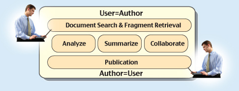
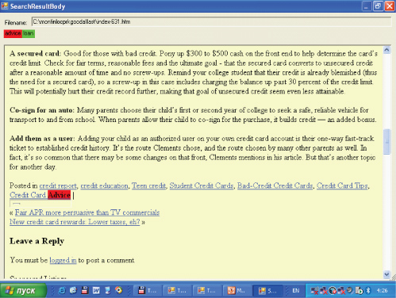

What We Do
AuthorWeb is a breakthrough technology with a new profit model that will largely replace current Web search engines and social networks. Users with analytic needs require much better drill-down tools than those offered by existing search engines and collaboration tools. AuthorWeb provides a powerful support for compilation, retrieval and analysis of texts, from traditional authoring to Web-based collaboration.
No one can retrieve human thoughts, but we can effectively retrieve fragments of texts that contain them, and the users can pick useful fragments that meet their intended need (rather than reading whole documents). AuthorWeb will also facilitate exchange of thoughts, where one collaborator may easily suggest to another a useful fragment (eg related to the second collaborator’s part of the report), which is also more effective than suggesting the whole document.
Advertisers will benefit from much more precise ad targeting of the high-valued professional web search segment as AuthorWeb facilitates Web knowledge discovery. If an advertiser places an ad on AuthorWeb, and the ad is shown to a user as a fragment among other search results or (even better) a collaborator suggests it to her, the user will pay much more attention to it as the ad matches both her topic of interest and her intended aim. This makes her acquisition probability as a client many times higher than in any existing search engine.

We have developed a well-working English/Russian alpha version that shows the power of our approach. It indexes and searches any preselected document sets, identifies the intended aim of the user via dialog and provides immediate access to relevant fragments.

Keywords (or even their regular synonyms) are not present in the fragment. Only semantic synonyms allow us to find relevant fragments, and their discovery in texts is our know how.
